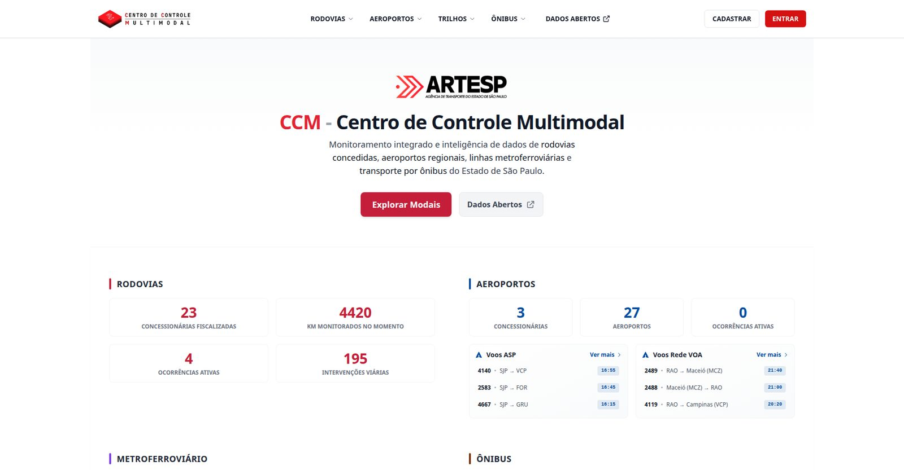
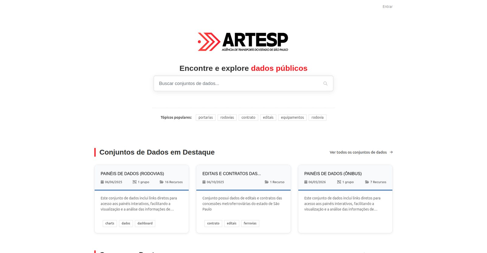

Centro de Controle Multimodal · Plano estratégico
Cinco anos de modernização da coleta, da consolidação e da publicação de dados — e a proposta para o CCM responder pelo ciclo do dado da agência.
Versão de trabalho · outubro de 2026
Síntese
O que foi feito · 2021 → 2026
O que se propõe
Em tudo o que foi feito e em tudo o que se propõe, preferência por software livre: as oito aplicações foram implantadas sem custo de licença para a agência.
Situação das entregas em 02/10/2026
Parte I
2021 → 2026: automação, aplicações, governança e termos de referência — construídos internamente, sobre software livre.
2021 · O ponto de partida
Tratamento predominantemente manual, com consolidação dos dados em planilhas.
Os dados ingressavam pelo Módulo ITS, do IPT, sem interface de extração disponível.
O contrato com o IPT encontrava-se encerrado, sem via para evolução da plataforma.
Ausência de qualificação em coleta, tratamento e automação de dados.
Objetivo assumido
Organizar e modernizar a coleta, a consolidação e a publicação dos dados do centro, capacitando a equipe em práticas modernas.
O centro denominava-se CCI — Centro de Controle de Informações
2021 · A modernização
Situação encontrada
Ingresso de dados pelo MITS, sem API
Extração e tratamento manuais
Consolidação em planilhas
Relatórios elaborados sob demanda
Equipe sem capacitação técnica em coleta, tratamento e automação de dados
Situação implantada
APIs do MITS e do MIP, após renovação do contrato com o IPT
Coleta automatizada e consolidação em Python
Procedimentos definidos e dados estruturados
Primeiros painéis publicados em cciocorrencias.com, primeiro sítio de dados do CCI
Capacitação da equipe em práticas modernas, orientada pelo proponente
cciocorrencias.com → cci.artesp.sp.gov.br → ccm.artesp.sp.gov.br, o atual Portal CCM
O ecossistema atual
Produção
Público: geral
Produção
Público: concessionárias
Produção
Público: cidadão
Produção
Público: interno, usuários autorizados
Produção
Público: CCM
Homologação
Público: concessionárias e ARTESP
Homologação
Público: ARTESP
Homologação
Público: concessionárias e CCM
Cinco em produção e três em homologação, todas desenvolvidas e implantadas internamente, sobre software livre.
Situação em 02/10/2026
Em produção
Acompanhamento de dados próximos do tempo real de todos os modais, com catálogo de painéis.
ccm.artesp.sp.gov.br
Emissão de códigos para os protocolos das concessionárias e gestão dos documentos recebidos.
codifica.artesp.sp.gov.br
Portal CKAN com catálogo no padrão DCAT e séries não sensíveis em formato aberto.
dadosabertos.artesp.sp.gov.br
Consulta às leituras de placas nas rodovias concedidas, com acesso restrito a usuários autorizados.
uso interno
Armazenamento institucional compatível com S3, com antivírus, permissões por bucket e auditoria.
uso do CCM
Desenvolvidas e implantadas internamente no CCM · situação em 02/10/2026
Em produção · criado e administrado pelo CCM

ccm.artesp.sp.gov.br
Monitoramento integrado e inteligência de dados das rodovias concedidas, dos aeroportos regionais, das linhas metroferroviárias e do transporte por ônibus do Estado de São Paulo.
Acesso público, com cadastro para as áreas restritas.
Em desenvolvimento desde abril de 2021 · Django, Redis, PostgreSQL · captura da página inicial em 02/10/2026
Em produção · criado e administrado pelo CCM

dadosabertos.artesp.sp.gov.br
Transparência ativa: conjuntos de dados da agência publicados em formato aberto, com busca, catálogo e metadados no padrão internacional de dados abertos governamentais.
47
conjuntos de dados
7
grupos temáticos
107
etiquetas de busca
CKAN
plataforma livre de dados abertos
Grupos: rodovias, metroferroviário, ônibus, aeroportos, hidroviário, legislação e gestão socioambiental. Painéis de dados por modal, editais e contratos das concessões, séries históricas e documentos regulatórios, sem custo de licença para a agência.
CKAN, PostgreSQL, Solr, Redis, NGINX · contagens do catálogo em 02/10/2026
Em homologação
Homologação
Recepção, validação e visualização dos conjuntos de dados georreferenciados entregues pelas concessionárias. A ARTESP define a estrutura exigida de cada conjunto e audita o conteúdo recebido.
Cada entrega corresponde ao estado integral do conjunto, não a uma atualização parcial.
Homologação
Catálogo e governança dos metadados das bases de dados existentes na agência, integrado ao diretório institucional de usuários.
Consolida o inventário das bases, seu conteúdo e os responsáveis por cada uma.
Homologação
Registro, tratamento e publicação das ocorrências das concessionárias. O envio ocorre por interface ou por API; o CCM revisa, solicita complementações, trata as imagens e autoriza a publicação.
Histórico integral preservado: nenhuma alteração é descartada.
Recepção segundo regras definidas pela agência e inventário das bases existentes: fundamentos da governança proposta
Modelo de construção
As oito aplicações foram desenvolvidas e implantadas internamente sobre software livre. Nenhuma delas gerou custo de licença ou de contratação.
| Aplicação | Base de software livre |
|---|---|
| Dados Abertos | CKAN, PostgreSQL com PostGIS, Solr, Redis |
| Portal CCM e Codifica | Django, Redis, PostgreSQL |
| Passagens OCR | PostgreSQL, ClickHouse, Redis, SeaweedFS |
| Object Storage | SeaweedFS, painel administrativo em Go, PostgreSQL, ClamAV, Caddy |
| GeoEntregas | Django com extensão geográfica, PostgreSQL, tusd, Caddy |
| OpenMetadata | OpenMetadata, k3s, Helm, PostgreSQL |
| CCM Ocorrências | Django, Next.js, PostgreSQL, SeaweedFS, ClamAV |
Implantação com Docker Compose, Ansible e k3s na infraestrutura institucional · o mesmo modelo orienta a proposta
Superintendências titulares do dado
Data Stewards por gerência
Comitê de Governança de Dados
Contratos de dados versionados
Índice de qualidade por remessa
Canal operacional
Eventos, fluxos e situação dos ativos de todos os modais. Tempo real inferior a 5 minutos; próximo do tempo real inferior a 60 minutos.
Transparência ativa
Séries históricas e indicadores consolidados, não sensíveis, em formato aberto, conforme matriz de classificação.
Decisão interna
Executivos e operacionais, com acesso restrito e autenticado, voltados a tendências e ao apoio à decisão regulatória.
Minuta de proposta elaborada pelo proponente · apresentada em janeiro de 2026 · sem continuidade pelos gestores da SUTID
Apoio operacional
Reformulação do MITS
Reforma do CCM
Plataforma Multimodal
Contratado
Termo de referência concluído. Operação contínua, equipe analítica, plataforma de gestão com evidências e medição por hora efetiva.
Início da execução em 01/10/2026.
Não avançou
Termo de referência concluído, com escopo restrito ao domínio rodoviário.
Não avançou, em favor da priorização da Plataforma Multimodal.
TR concluído
Projetos básico e executivo, reforma e implantação da infraestrutura física e tecnológica do novo centro.
Contratação não iniciada.
Proposta
Proposta em planejamento: camada de dados própria da agência e software multimodal contratado para operar sobre ela.
Sem termo de referência; objeto a definir após avaliação de viabilidade.
Elaboração dos termos de referência: proponente · Condução das contratações: gestores do CCM
TR 01 · Contratado · em execução desde 01/10/2026
Valor-hora por perfil; vedado o preço global por posto.
Registro eletrônico de jornada, trilha imutável, conciliação automática e leitura pela ARTESP.
Gatilhos definidos, fórmula proporcional, contraditório e decisão formal antes do ateste.
Teste de conformidade da plataforma, com roteiro público; a reprovação desclassifica.
Operação em 12×36, reserva técnica não faturável e sala de controle conforme ISO 11064.
Cinco perfis com formação, conhecimentos obrigatórios em BI, SQL, Python e GIS, e SLOs próprios.
Manual com matriz de responsabilidades e catálogo de doze procedimentos operacionais padrão.
Cada nível de serviço vinculado a indicador com fonte, fórmula e periodicidade, com alertas automáticos.
Cinco analistas de dados contratados. O proponente elaborou o termo de referência e participou apenas da análise de dois currículos.
Elaboração: proponente · Condução da contratação: gestores do CCM
TR 01 · Apoio operacional em números
17
profissionais: supervisão operacional e de dados, analistas, operadores 24×7 e apoio administrativo
≥ 99%
de cobertura dos postos; recomposição de posto descoberto em até 3 horas
15 min
para comunicação de incidente crítico; abertura de registro em até 5 minutos
12
procedimentos operacionais padrão catalogados, oito obrigatórios até o 15º dia, revisão trimestral
≥ 99,5%
de disponibilidade mensal exigida da plataforma de gestão de serviços
24 h
para notificação de incidente com dados pessoais; portabilidade integral ao encerramento
Pagamento condicionado ao cruzamento entre registro eletrônico, escala aprovada e evidências — sem remuneração por disponibilidade não verificável.
Valores do termo de referência elaborado · a execução contratada pode ter dimensionamento distinto
TR 02 · Concluído · não avançou, em favor da Plataforma Multimodal
Arquitetura, dicionário, linhagem e manuais aceitos pela ARTESP antes de qualquer migração.
Registro de esquemas; mensagens fora do padrão rejeitadas na entrada; idempotência e correlação.
Validação de chaves na ingestão, quarentena de registros inválidos e classificação padronizada.
Dado bruto imutável, catálogo com inventário automático, linhagem e glossário de negócio.
Origem contra destino, automatizada, para os domínios críticos; divergência admitida de até 0,1%.
Em todas as concessionárias, com repositório de evidências retido por cinco anos.
Chaves sob custódia da ARTESP, formatos abertos e simulação anual de reversibilidade.
Marcos verificáveis com portões de qualidade; vedada a remuneração por alocação de pessoal.
4 eixos: legado · modernização · nuvem · IA
~1,25 bi registros
4.500 câmeras
21 sistemas
60 meses
Escopo restrito ao domínio rodoviário · Elaboração: proponente · Condução: gestores do CCM
TR 03 · Concluído · contratação não iniciada
Comando por voz com modelo de linguagem processado na sede, com salvaguardas e plano contra degradação do modelo.
Distribuição de vídeo sobre rede dedicada de 10 Gbps, painel LED contínuo e decodificação nativa de câmeras IP.
Energia, climatização e rede redundantes, com caminhos físicos independentes e manutenção sem interrupção.
Computação, armazenamento e IA integralmente na ARTESP, por soberania, segurança e latência.
Ruído de fundo, reverberação e inteligibilidade com limites mandatórios, medidos em todos os postos.
Temperatura de cor variável ao longo das 24 horas, ofuscamento controlado e luz de tarefa por posto.
Análise de tarefas, oficinas participativas, maquete em escala real e protótipo em realidade virtual antes da obra.
Consoles com ajuste elétrico, cadeiras certificadas para uso contínuo e área de descanso acusticamente isolada.
Contratação integrada: projeto básico, projeto executivo e execução, entregues prontos para operação. O software multimodal é objeto distinto, integrado por APIs abertas documentadas no termo.
Elaboração: proponente · Condução: gestores do CCM
Plataforma Multimodal · camada de dados
Fluxo demonstrado
Produtores
eventos
Barramento
contratos
Processamento
validação
Repositório
em camadas
Consulta
SQL
Painéis
visualização
Elaboração: proponente · ambiente MVP provisionado para testes.
Parte II
01 Restabelecer o CCM como gerência responsável pelo ciclo do dado.
02 Plataforma Multimodal: camada de dados própria e software contratado sobre ela.
03 Consultoria para verificação independente dos dados na origem.
04 Escritório de projetos na SUTID, com plataforma em software livre.
Objetivo 01
O CCM manteve o nível de gerência até junho de 2026, quando passou a coordenadoria. O nível gerencial é condição para exigir prazo e formato das demais áreas e para responder institucionalmente pelo dado publicado pela agência.
Padrões, prazos e responsabilidades de quem envia e de quem recebe os dados.
Conferência do que ingressa e registro da qualidade, com evidência do procedimento aplicado.
Disponibilização aos canais e às áreas do dado consolidado e rastreável.
A titularidade do conteúdo permanece com as Superintendências setoriais. O CCM responde pelo ciclo: padrão, recepção, verificação e publicação.
Atribuições formais e interfaces com as demais áreas a pactuar
Objetivo 02 · proposta em planejamento
Camada de dados construída pela agência; software multimodal contratado para operar sobre ela; infraestrutura contratada diretamente dos provedores de nuvem. Arquitetura e prova de conceito elaboradas pelo proponente.
Diagnóstico
01
Formatos, prazos e qualidade variam de operador para operador. A conferência é manual, caso a caso, e depende de quem recebe.
02
A ARTESP recebe o que o sistema da concessionária produz, sem meio próprio de comprovar que o enviado corresponde ao medido.
03
O rodoviário tem o MITS; o ônibus metropolitano, os sistemas herdados da EMTU; os demais modais, bases de maturidade desigual. Nenhum se integra aos outros.
Consequência: fiscalização reativa, apoiada em consolidações tardias, e evidências frágeis quando a agência precisa demonstrar conformidade ou inadimplemento.
Diagnóstico consolidado pelo proponente nos estudos preparatórios da proposta
Fontes e produtores
concessionárias
permissionárias
operadoras
sensores
sistemas internos
Borda de entrada
gateways de API, eventos, arquivos e mídia
autenticação
limitação de tráfego
Trilhas de ingestão
A · dados e eventos estruturados
B · CFTV e streaming
C · arquivos e objetos
Controle de ingestão e qualidade
contratos
versões
validação
deduplicação
quarentena
histórico
Processamento e correlação
normalização
enriquecimento
reconciliação
correlação multimodal
Armazenamento central
eventos e estados
objetos e evidências
repositório analítico
catálogos
Consumo e operação
operação
fiscalização
painéis
transparência
órgãos de controle
Em destaque, a camada em que a agência decide o que ingressa · camada transversal: governança, segurança, observabilidade e auditoria
Mensagens estruturadas e telemetria
Sessões de vídeo e evidências
Documentos, imagens e binários
Contrato e versão → validação → duplicidade → quarentena. A decisão de aceite é registrada.
Encaminhado ao processamento e à publicação.
Admitido com marcação da divergência identificada.
Recusado na entrada; o motivo é devolvido ao operador.
Retido para análise prévia à decisão.
Vedado o aceite sem contrato ou versão · vedada a perda de visibilidade sobre falhas · todo registro recusado conserva o motivo
Arquivos que acompanham a ocorrência
Objetos efetivamente armazenados
Declarado × recebido × impressão digital, com prazo por tipo de anexo
Conforme ao declarado
Declarado e não entregue
Entregue sem ocorrência vinculada
Conteúdo distinto do declarado
Guarda e rastreabilidade
Dado bruto imutável
O conteúdo recebido não é sobrescrito.
Reprocessamento
Qualquer série pode ser reconstituída a partir do dado bruto.
Registro de validação
Um registro por mensagem, lote, regra aplicada e anexo conciliado.
Versões registradas
Cada resultado preserva o contrato, a regra e a referência vigentes.
Imagens, vídeos e relatórios tratados como evidência digital · materialidade para a fiscalização e para os órgãos de controle
Devolutiva ao operador
Todo envio aceito gera recibo assinado, com carimbo de recebimento e impressão digital do conteúdo.
Consulta por mensagem, por lote e por anexo: o que foi admitido, o que foi recusado e a regra aplicada.
Resultados exportáveis em formato aberto e notificação automática à alteração do estado de um lote.
O operador valida a integração contra as mesmas regras e contratos antes do envio em produção.
Isolamento por operador em todas as consultas · a correção prescinde de intermediação do CCM
Premissas e escala
1,25 bi
registros estruturados no legado rodoviário, início de 2026
282 GB
de dados estruturados — referência mínima de capacidade; demais modais dimensionados por envelope
Volumetria apurada nos levantamentos preparatórios do proponente
Objetivo 03
Contratar consultoria especializada para avaliar a viabilidade e comparar modelos de verificação independente dos dados das concessionárias — coleta direta nos equipamentos por protocolos ou hardware, auditorias periódicas ou alternativas que venha a propor — e recomendar o mais adequado à agência.
01
Mapear equipamentos, interfaces, bases de origem e condições de acesso ao dado.
02
Viabilidade técnica, econômica e operacional de cada modelo: cobertura, confiabilidade da medição, rastreabilidade, custo e impacto sobre as concessionárias.
03
Modelo recomendado, prova de conceito, responsabilidades e custo de implantação.
A camada de dados verifica o que é enviado; esta frente define como verificar o que é medido.
Proposta · escopo e entregáveis a detalhar na fase de planejamento da contratação
Objetivo 04
Apoiar a Superintendência de Tecnologia da Informação na instituição do escritório de projetos, com plataforma de gestão de projetos em software livre, conferindo visibilidade do portfólio, dos prazos, dos responsáveis e das decisões à superintendência e à direção.
Todos os projetos de tecnologia registrados em um só instrumento, com situação, responsável e dependências.
Prazos, marcos, riscos e decisões registrados no momento em que ocorrem, com histórico preservado.
A superintendência e a direção acompanham o andamento sem depender de relatórios elaborados manualmente.
É nesse instrumento que as demais frentes deste plano passariam a ser acompanhadas.
Proposta · plataforma em software livre, sem custo de licença
Em curso
Apoio operacional contratado, em execução.
Planejamento
Camada de dados própria e software contratado.
Proposta
Consultoria: viabilidade e comparação de modelos.
TR concluído
Infraestrutura física e tecnológica.
Proposta
Acompanhamento de todas as frentes.
Uma frente em execução, uma em planejamento e três propostas, acompanhadas com transparência pela SUTID.
Prioridades, sequência e recursos a pactuar
O que se pede
01
Reconhecer o CCM como a gerência responsável pelo ciclo do dado da agência.
02
Autorizar a avaliação interna de viabilidade da camada de dados e a modelagem da contratação do software multimodal.
03
Definir a ordem entre plataforma, reforma do centro e consultoria de verificação na origem.
04
Autorizar o apoio à SUTID na instituição do escritório e da plataforma de gestão em software livre.
05
Dimensionar equipe, infraestrutura e as contratações remanescentes.
Decisões submetidas à apreciação · outubro de 2026
A estudar
Equipamentos das concessionárias.
Verificação independente contra violação ou fraude — objeto da consultoria.
Origem
Sistemas das concessionárias dos cinco modais, que transmitem eventos, arquivos e evidências.
ARTESP
Recepção, validação, guarda, evidência e devolutiva. O dado pertence à agência; sem dependência de fornecedor.
Avaliação interna de viabilidade; se viável, construção interna; caso contrário, contratação.
Contratação
Operação, fiscalização e análise sobre a camada de dados, sem posse do dado.
Uso
Fiscalização, painéis, transparência, órgãos de controle.
Contratos diretos com os provedores, sem intermediário.
Contrato direto
Anexo · linha tracejada: confronto entre o dado medido em campo e o dado enviado · desenho do proponente
Documentos citados
Contratado; execução iniciada em 01/10/2026
Concluído; não avançou, em favor da Plataforma Multimodal
Projetos básico e executivo, reforma e implantação; contratação não iniciada
Minuta de proposta; apresentada em janeiro de 2026
Elaboração: proponente · os termos de referência em Word foram convertidos para PDF
Aplicações citadas
Produção · público
Produção · concessionárias
Produção · público
Produção · acesso interno restrito
Interno
Produção · uso do CCM
Interno
Homologação · concessionárias e ARTESP
Homologação
Homologação · ARTESP
Homologação
Homologação · concessionárias e CCM
Homologação
Situação em 02/10/2026 · as aplicações internas e em homologação não têm endereço público